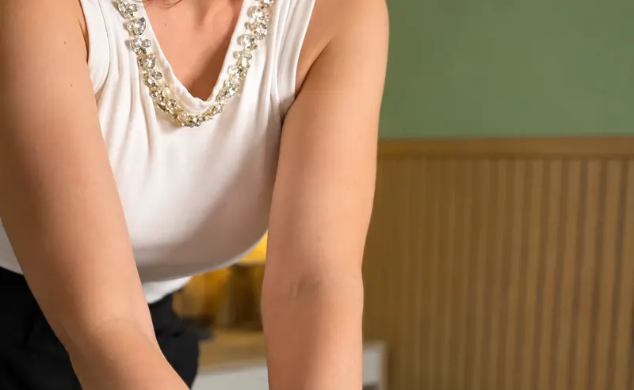
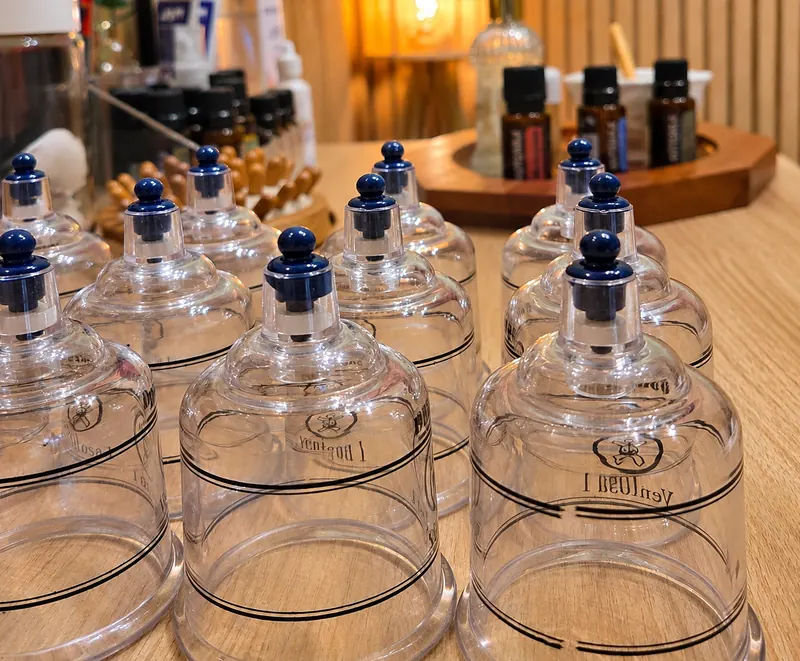
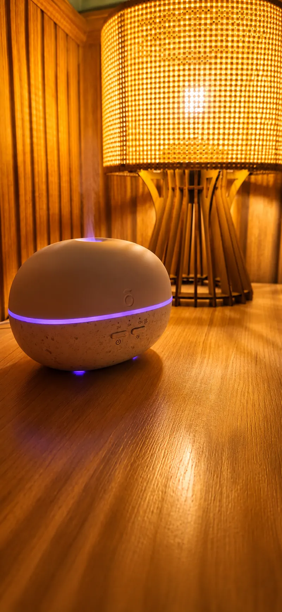
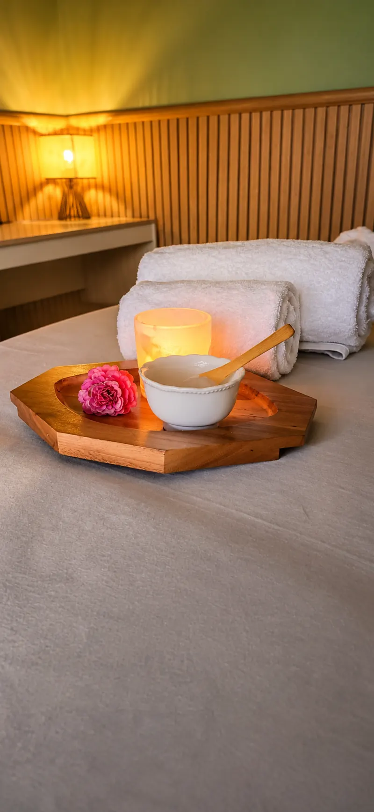
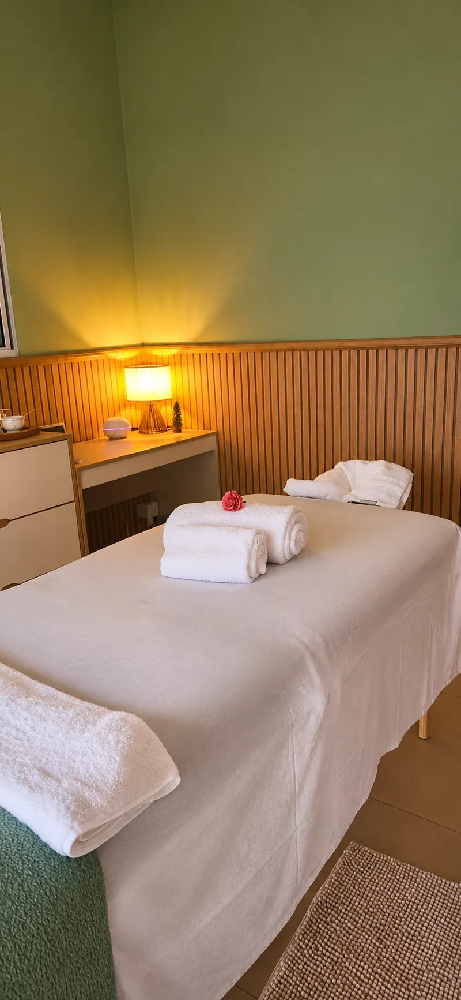
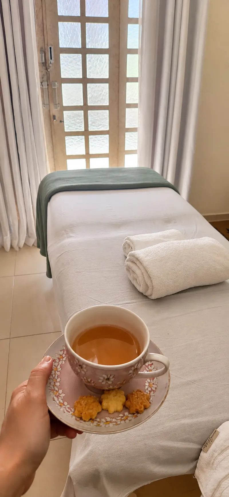
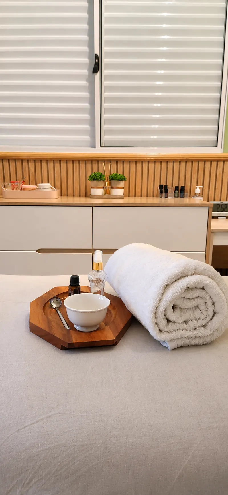
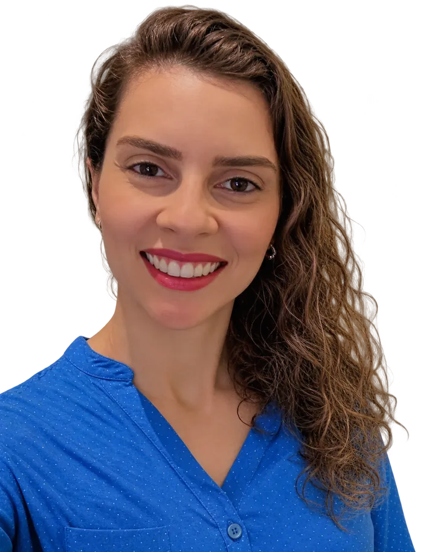
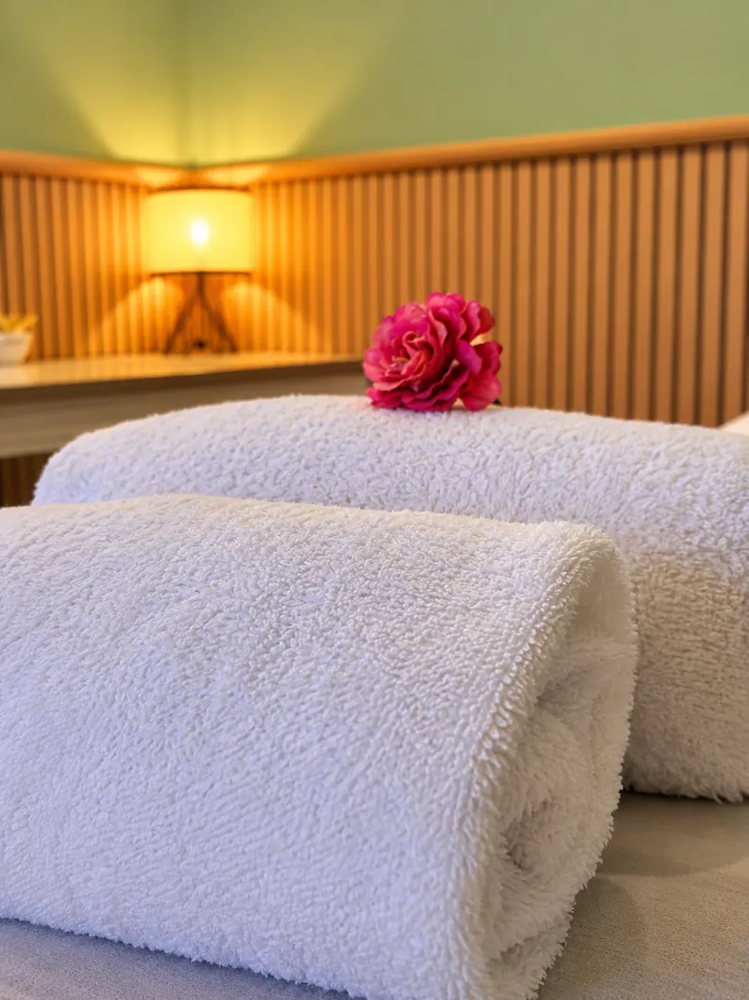

Costas
Aquela dor na lombar ou entre as escápulas que melhora um pouco e sempre volta.
Sou massoterapeuta clínica no centro de Natal e trabalho com massagem desde 2011. Antes de tocar, eu avalio: cada sessão é pensada para o que o seu corpo está pedindo.
5,0 no Google, 33 avaliaçõesRigidez ao acordar, o pescoço que trava, o ombro que pesa no fim do dia. A gente se acostuma e, sem perceber, para de fazer movimentos que antes eram naturais.

Aquela dor na lombar ou entre as escápulas que melhora um pouco e sempre volta.
Tensão que acumula depois de um dia corrido, no computador ou no volante.
Muitas vezes, a tensão no pescoço está por trás dela.
Sentir o corpo pesado, cansado e sobrecarregado não precisa ser a sua rotina.
Quando a gente evita um movimento por causa do incômodo, outras partes do corpo começam a compensar. Por isso cuidar cedo faz diferença. Em caso de dor intensa, febre, formigamento ou após um acidente, procure primeiro um médico.
Sentir dor não é normal, mas normalizam.
Cada corpo é único, e o seu atendimento também deve ser. Uma coisa de cada vez, sem pressa.
Entendo onde dói, desde quando, sua rotina de trabalho e de treino. É também um momento para desabafar, se precisar. Essa escuta faz toda a diferença.
Com base no que você me contou, escolho a técnica, ou a combinação delas: terapêutica, ventosas, pedras quentes, aromaterapia ou relaxante.
Um toque com propósito, na pressão que o seu corpo aceita, numa sala climatizada, silenciosa e perfumada.
Você sai sabendo o que observar e como cuidar do corpo até a próxima sessão, com o corpo e a mente mais leves.
Muita gente me procura com dor pedindo uma massagem relaxante. Nesses casos eu explico: a massagem terapêutica costuma ser a melhor opção, porque trabalha com manobras de liberação miofascial.
Manobras de liberação miofascial, que é a pressão lenta sobre a fáscia, a película que envolve os músculos. Ajuda a soltar pontos de tensão nas costas, no pescoço e nos ombros.

Copos que fazem sucção e levantam a pele e o tecido, ajudando a soltar áreas mais rígidas.
Pedras aquecidas que espalham calor pelos músculos e ajudam o corpo a relaxar mais fundo.

Óleos essenciais no difusor e na massagem, escolhidos com você.

Ritmo lento e contínuo, para quando o que você precisa é desacelerar.
Você não precisa saber. Na avaliação a gente decide junto, e muitas vezes a sessão combina mais de uma técnica.
Me conta o que você está sentindo.
Pedir orientação no WhatsAppUma sala só para o seu atendimento, na Cidade Alta: luz baixa, toalhas limpas, aroma no ar e um chá esperando por você.


"Sala limpa, climatizada, bem organizada e perfumada, traz muita tranquilidade antes mesmo da massagem iniciar."Elizandro R., avaliação no Google


Sou massoterapeuta clínica, apaixonada pelas terapias manuais, e trabalho com massagem desde 2011. Ao longo desses anos entendi que uma massagem vai muito além de relaxar: ela pode ser o começo de uma rotina com menos dor, menos tensão e mais qualidade de vida.
Meu propósito é usar o toque de forma terapêutica para aliviar dores e tensões musculares e dar ao seu corpo o momento de cuidado que você vem adiando.
Que minhas mãos sejam como as mãos do oleiro, que amassa o barro e transforma.
Avaliações reais, publicadas no Google por quem já deitou na maca.
"Profissional excelente. Atenta, organizada, sensível e cuidadosa. Características imprescindíveis para quem atua cuidando de pessoas."
"Cheguei lá com vários pontos de tensão nas costas e dor. Obrigada, Isa, você é genial."
"Ela faz uma avaliação para saber as necessidades e qual a melhor massagem para a situação. Explica tudo de maneira bem detalhada e clara."

A gente coloca tanta coisa na agenda e quase sempre deixa o próprio cuidado por último. Conhece alguém que vive reclamando de dor? O Gift Card resolve isso.
Me chama no WhatsApp que eu te explico as opções e preparo o vale.
Quero dar um Gift CardA relaxante tem ritmo lento e contínuo, pensada para desacelerar. A terapêutica usa manobras de liberação miofascial para trabalhar pontos de tensão e dor. Se você está com dor, ela costuma ser a melhor opção.
Começa com uma conversa e uma avaliação: onde dói, desde quando, sua rotina. A partir disso eu escolho a técnica, ou a combinação de técnicas, para o seu caso.
O valor depende da técnica e da duração da sessão. Me chama no WhatsApp que eu te passo tudo certinho.
R. São Tomé, 455, Cidade Alta, Natal. Atendo de segunda a sexta, das 9h às 19h, com horário marcado.
Não. A massagem é um cuidado complementar. Se você tem um diagnóstico ou faz tratamento, me conta na avaliação, e em caso de dor forte ou persistente, procure também um médico.
R. São Tomé, 455
Cidade Alta, Natal RN
59025-030
Segunda a sexta
9h às 19h
Com horário marcado